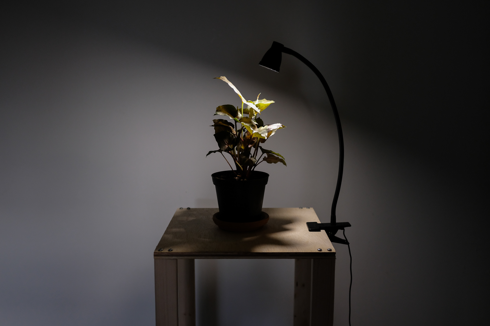

S. Podophyllum Receives the "Critique of Pure Reason"
2020
Plant, desk lamp, microcontroller
30 x 30 x 30 cm
Table lamp modified to "blink out" the bitstream of Kant's "Critique of Pure Reason." Each character of the original text is transmitted to S. podophyllum as a series of light/dark flashes, e.g.:
H ↣ 01001000 ↣ Off/On/Off/Off/On/Off/Off/Off
The process is repeated indefinitely. Over time, the information of the book is woven into S. podophyllum as its sole source of energy.
